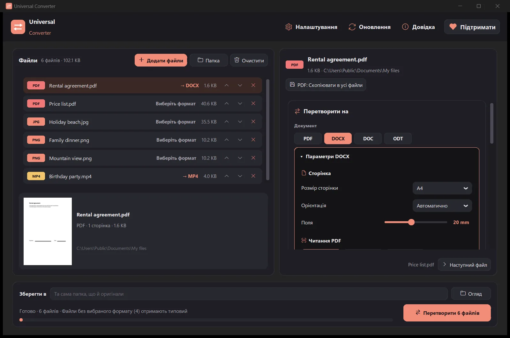
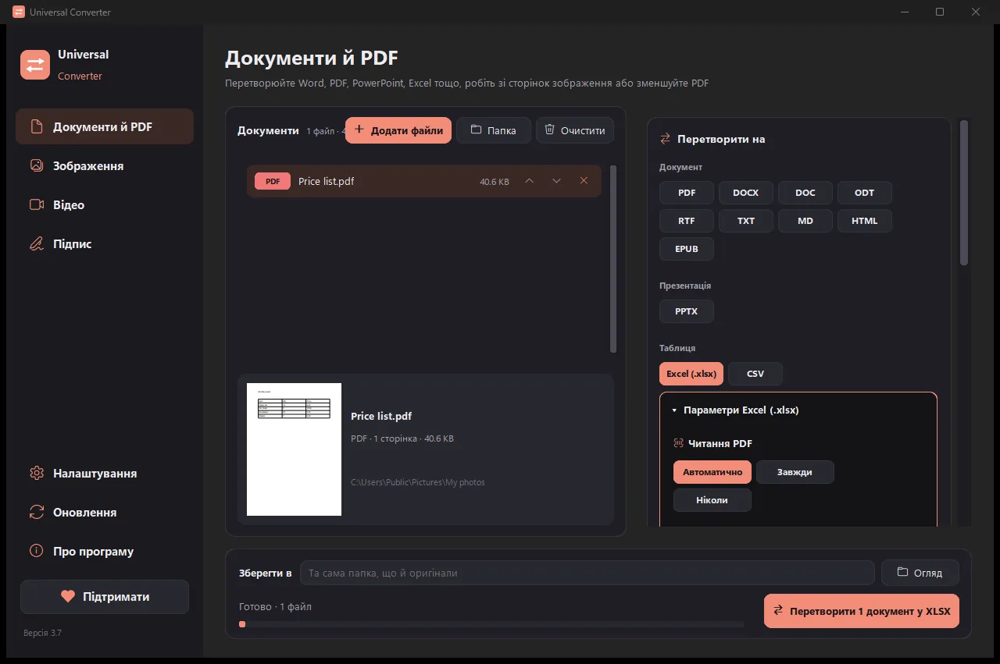
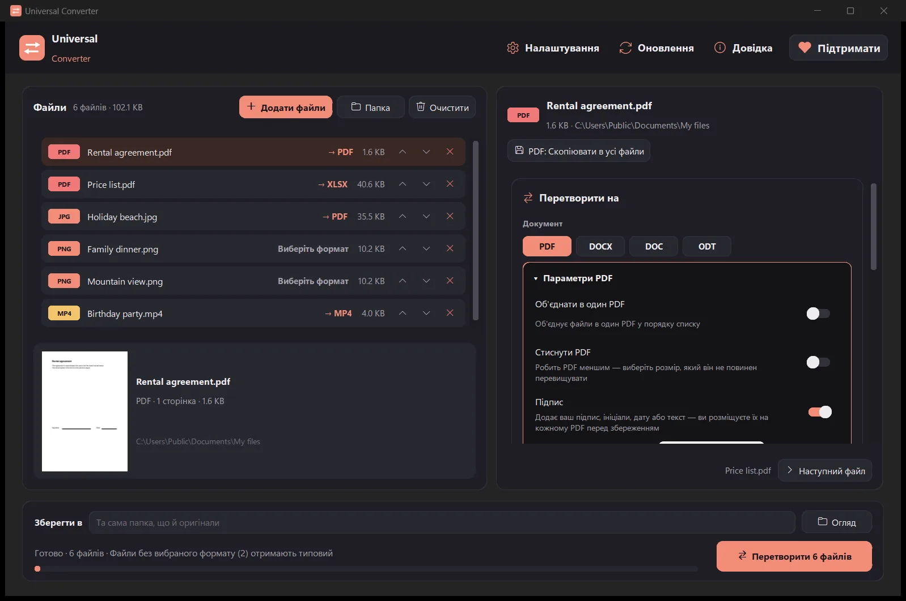

Перетворюйте файли на власному пристрої
Зображення, документи, відео й аудіо, PDF і таблиці в Excel - усе в одній програмі. Нічого не завантажується в мережу: ваші файли ніколи не залишають пристрій.
Як установити й оновити
- Відкрийте завантажений файл .dmg і перетягніть Universal Converter у «Програми».
- Відкрийте програму. Першого разу macOS блокує її, бо вона не підписана Apple: натисніть «Готово».
- Відкрийте «Системні параметри» > «Приватність і безпека», прокрутіть униз, натисніть «Усе одно відкрити» й введіть пароль. Це потрібно зробити лише один раз.
Оновлення: якщо ви дозволите це під час першого відкриття, програма перевірятиме нові версії під час кожного запуску, перевірятиме їхній цифровий підпис і встановлюватиме їх, коли ви вирішите.
Як установити й оновити
- Торкніться «Завантажити для Android» на телефоні.
- Відкрийте завантажений файл. Якщо Android запитає, дозвольте браузеру чи файловому менеджеру встановлювати програми.
- Торкніться «Установити».
Оновлення: програма приблизно раз на день перевіряє й повідомляє, коли готова нова версія. Завантажте її так само й установіть поверх старої; ваші налаштування збережуться.
Як установити й оновити
- Завантажте файл .AppImage.
- Зробіть його виконуваним: клацніть правою кнопкою, відкрийте Властивості > Права й дозвольте запуск як програми (або в терміналі: chmod +x Universal-Converter-*.AppImage).
- Двічі клацніть його. Нічого не встановлюється: програма - це один цей файл.
Оновлення: якщо ви дозволите це під час першого відкриття, програма під час кожного запуску шукає нові версії, перевіряє їхній цифровий підпис і замінює файл AppImage там, де він лежить.

Приватно
Усе працює на вашому пристрої. Без завантажень у мережу, без черги, без обмежень розміру.
Безкоштовно
Безкоштовна у використанні, без реклами, без облікового запису й без водяних знаків.
34 мови
Англійська, грецька, іспанська, італійська, німецька, французька, португальська (Португалія та Бразилія), польська, російська, арабська, іврит, китайська, японська, корейська, тамільська, африкаанс, йоруба, хауса, гінді, індонезійська, турецька, в'єтнамська, шведська, нідерландська, данська, українська, чеська, румунська, болгарська, норвезька, малайська, філіппінська та суахілі.
П'ять інструментів в одному вікні

Документи й PDF
Перетворення між PDF, Word, ODT, RTF, TXT, Markdown, HTML, EPUB, PowerPoint і Excel. Сторінки в зображення й кілька файлів в один PDF. Шрифти, розміри й кольори зберігаються. Зменшення PDF до розміру, який ви виберете. Скани й заповнені форми стають редагованим текстом і таблицями, розміщеними як на сторінці. Таблиці, навіть без ліній, як у банківських виписках, потрапляють у Word як справжні таблиці, а старі файли Word (.doc) і PowerPoint (.ppt) відкриваються.
Зображення
Перетворення між JPG, PNG, WEBP, TIFF, BMP, GIF і ICO. Зміна розміру в пікселях, відсотках чи за розміром файлу, об'єднання зображень у файл PDF або Word і читання тексту із зображень (OCR). Можна додавати й PDF: кожна сторінка стає зображенням.

Відео
Перетворюйте відео між MP4, MKV, WebM, MOV і AVI та стискайте їх за допомогою AV1, H.265, H.264 або VP9. Вирізайте, обрізайте, повертайте й змінюйте розмір, створюйте GIF, зберігайте кадри як зображення або залишайте лише звук у MP3, M4A, FLAC, WAV, OGG чи Opus. Якщо відео кілька, кожне може мати власні налаштування. На Android: MP4, MKV, WebM, MOV або GIF чи звук у M4A, OGG або WAV; вирізання, обрізання, повертання, зміна розміру й збереження кадрів.

Excel
Перенесення таблиць із PDF, сканів і фото в Excel або CSV: банківські виписки, рахунки, прайс-листи. Читає грецьку, англійську, іспанську та понад 30 інших мов.

Підпис
Підписуйте PDF і заповнюйте форми. Введіть ім'я рукописним стилем, намалюйте підпис або використайте його фото. Програма сама знаходить рядки для підпису, або ви клацаєте чи торкаєтеся там, де мають бути підпис, ініціали, дата, текст чи позначки. Підписуйте багато файлів за один раз; оригінали залишаються незмінними.
- Використовує відеокарту для відео, коли може: зазвичай у 5–20 разів швидше.
- Перетягуйте цілі папки: усі файли перетворюються за один раз.
- Підказує, коли файл належить до іншої вкладки, і переносить його туди одним клацанням.
- Повідомляє про нові версії; на Windows, Mac і Linux може встановлювати їх для вас із цифровою перевіркою.
- Світлий і темний вигляд, як на вашому пристрої.
Як це працює
- Відкрийте Universal Converter і виберіть Документи й PDF · Зображення · Відео · Підпис ліворуч.
- Перетягніть файли або цілу папку у вікно чи натисніть Додати файли.
- Натисніть Перетворити. Нові файли зберігаються поруч з оригіналами або в папці, яку ви виберете.
Що вона вміє
- Перетворіть PDF у Word
- Перетворіть документи Word на PDF
- Об'єднайте кілька файлів в один PDF
- Стисніть PDF до вибраного розміру
- Стисніть PDF до 100 КБ, 200 КБ або будь-якого розміру для онлайн-форм
- Перетворіть сторінки PDF на зображення JPG
- Перетворіть сканований документ на редагований файл Word
- Перетворюйте зображення між JPG, PNG, WEBP та іншими форматами
- Змініть розмір зображень або зменште їх до розміру файлу
- Змініть розмір фото чи підпису до 20 КБ, 50 КБ або точних пікселів
- Об'єднайте фото в один PDF
- JPG у PDF менше 100 КБ
- Скопіюйте текст із зображення (OCR)
- Стисніть відео, не завантажуючи його в мережу
- Перетворюйте відео між MP4, MKV, WebM, MOV і AVI
- Збережіть звук із відео в MP3
- Створіть GIF з відео
- Перенесіть таблиці з PDF в Excel
- Перетворіть банківську виписку в PDF на Excel
- Витягніть таблиці з рахунків у PDF в Excel
- Підпишіть PDF
- Заповніть форму PDF
Запитання
Вона справді безкоштовна?
Так. Universal Converter безкоштовна у використанні, без реклами, без облікового запису й без обмеження в часі. Якщо вона вам допомагає, ви можете підтримати розробку добровільним внеском, але це ніколи не обов'язково.
Чи завантажуються мої файли кудись?
Ні. Кожне перетворення відбувається на вашому власному пристрої, тож воно працює й без інтернету. Програма виходить в інтернет лише для перевірки оновлень, для завантаження вибраних вами абеток для розпізнавання тексту і, якщо ви дозволите, для надсилання анонімних звітів про помилки.
Чи безпечно її завантажувати?
Так. Перш ніж потрапити на цю сторінку, завантаження кожної версії для Windows, Mac, Linux і Android перевіряються приблизно 60–70 антивірусами на VirusTotal; посилання під кожною кнопкою завантаження відкриває звіт про цей файл. Програма не показує реклами й не збирає персональних даних, а версію з Microsoft Store також перевіряє й підписує Microsoft.
Windows показує попередження SmartScreen. Це нормально?
Так. Інсталятор ще не має цифрового підпису коду, тому Windows його не розпізнає. Виберіть «Докладніше», а потім «Усе одно запустити». Подальші оновлення програма перевіряє цифровим підписом сама. Або встановіть її з Microsoft Store, де попередження немає.
Як відкрити її на Mac?
Відкрийте завантажений файл і перетягніть Universal Converter у «Програми». Програма не підписана Apple, тому під час першого відкриття macOS блокує її: натисніть «Готово», потім відкрийте «Системні параметри» > «Приватність і безпека», натисніть «Усе одно відкрити» й введіть пароль. Це потрібно зробити лише один раз.
Як установити її на Android?
Завантажте APK на телефон, відкрийте його й дозвольте встановлення, коли система запитає (Android 10 або новіша). Усі 34 мови вбудовані; виберіть мову в Налаштуваннях програми. Програма повідомляє, коли виходить нова версія.
Якими мовами вона говорить?
Програма доступна англійською, грецькою, іспанською, італійською, німецькою, французькою, португальською (Португалія та Бразилія), польською, російською, арабською, івритом, китайською, японською, корейською, тамільською, африкаанс, йоруба, хауса, гінді, індонезійською, турецькою, в'єтнамською, шведською, нідерландською, данською, українською, чеською, румунською, болгарською, норвезькою, малайською, філіппінською та суахілі. Мову можна вибрати в інсталяторі або пізніше в Налаштуваннях.